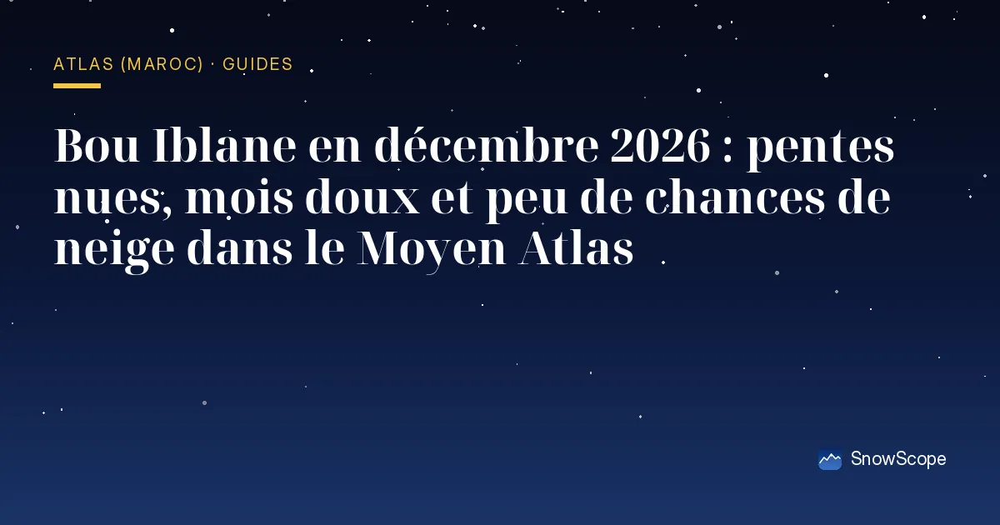

Bou Iblane en décembre 2026 : pentes nues, mois doux et peu de chances de neige dans le Moyen Atlas
Bou Iblane le 10 novembre n'affiche aucune neige sur sa crête élevée ni sur les pics environnants du Moyen Atlas oriental. Les prévisions pour décembre annoncent un mois décidément chaud qui réduit les chances de neige : là où ces montagnes reçoivent généralement la neige hivernale, cette année la probabilité de dépasser les moyennes n'est que de 30 à 39 pour cent.
Consultez les prévisions neige en temps réel pour Bou Iblane sur l'application SnowScopeHauteurs de neige, alertes poudreuse et carte 3D, gratuitement.

Le massif nu aujourd'hui
En parcourant les hauteurs autour de Bou Iblane, on découvre du rocher nu et des éboulis. La carte SnowScope du 10 novembre n'affiche aucun blanc dans un rayon de 60 km autour du sommet à 2 700 m. Nous montrons le terrain à la place : la longue crête de Bou Iblane elle-même, et à l'est la masse distincte de Bou Naceur. Ce sont les sommets où la neige hivernale s'accroche en premier quand la saison tourne.
En novembre, le Moyen Atlas est encore chaud et sec. Les 13 cellules de grille montagneuse de la région penchent toutes vers moins de neige que les décembres passés, et aucune ne montre un signal penchant vers plus. Cette tendance est provoquée par la chaleur, non par une atmosphère sèche.
Ce que décembre apporte généralement
En altitude sur Bou Iblane près de 2 700 m, un décembre typique dépose 23 cm de neige nouvelle. Au 31 décembre, seulement 5 cm reste au sol. Le soleil et les périodes chaudes entre les tempêtes font fondre l'essentiel. Ce sont des montagnes sèches où la neige ne s'accumule que si le froid persiste ou si la poudre fraîche arrive quotidiennement.
L'éventail entre les décembres moins enneigés et plus enneigés du passé est très large : un quart des hivers passés s'est terminé sans neige du tout, tandis qu'un quart en a eu 11 cm ou plus. Les prévisions de cette année rétrécissent cet éventail vers le bas. Les chances de terminer décembre plus profond que les 5 cm typiques ne sont que de 30 pour cent.

La chaleur est le facteur principal
Les 51 prévisions du centre météorologique européen s'accordent fortement sur un point : décembre sera chaud. Quatre-vingt-seize pour cent d'entre elles prédisent des températures supérieures à la normale, avec un réchauffement moyen de 2,3 degrés Celsius sur le Moyen Atlas. Un tel consensus sur la chaleur est rare.
Sur les précipitations, les prévisions divergent : 41 pour cent plus humides que la normale, 59 pour cent plus sèches. En moyenne, elles prédisent 2 pour cent de pluie et neige de plus qu'un décembre typique de 42 mm, un léger surplus. Pourtant, dans ces montagnes, la température importe plus que les précipitations totales. La neige répond aux deux : elle suit étroitement les précipitations (corrélation 0,86), mais la chaleur éloigne la neige (corrélation -0,38). Quelques degrés de chaleur supplémentaire transforment la neige tombante en pluie sur les pentes basses et accélèrent la fonte en altitude.


Quels décembres du passé correspondent à ce schéma
Le système saisonnier trouve ses plus proches correspondances historiques en décembre 2022, décembre 2010 et décembre 2002. Ces trois hivers ont partagé des masses d'air chaud et des chutes de neige éparses sur l'Atlas. Aucun n'a livré une bonne base de neige en fin de mois.
Cependant, l'histoire montre aussi une échappatoire : une tempête atlantique puissante peut inverser la situation en quelques jours. Quand l'air froid et les précipitations organisées s'alignent, Bou Iblane et ses pics voisins deviennent blancs rapidement. Ces tempêtes sont rares en décembre mais pas impossibles. Les prévisions mensuelles sont une tendance probabiliste, pas une prévision gravée dans la pierre.

Où regarder quand la neige arrive
Si décembre apporte un événement neigeux, la crête élevée de Bou Iblane le recueillera en premier, notamment sur les pentes orientées nord au-dessus de 2 700 m. Ces expositions conservent la neige le plus longtemps car le soleil hivernal reste bas et faible. Les pentes orientées sud perdent leur manteau rapidement une fois qu'un dégel commence.
La différence entre un mois nu et une surprise enneigée se réduit souvent à une ou deux semaines en début décembre. Consultez attentivement la prévision à 7 jours. Quand les météorologues annoncent un système froid et humide du nord-ouest, c'est à ce moment qu'il faut planifier votre ascension. Entre ces systèmes, attendez-vous à une fonte et à une régression.
Conseils aux skieurs
- Planifiez vos randonnées sur Bou Iblane en utilisant la prévision à 7 jours, pas les prévisions mensuelles. Les conseils hebdomadaires vous disent quand il neige vraiment.
- Après toute tempête de décembre, dirigez-vous vers les pentes orientées nord et les crêtes au-dessus de 2 700 m où la neige persiste le plus longtemps au soleil hivernal intense.
- Vérifiez la carte SnowScope avant votre départ. Dans un décembre chaud, la neige sur ces pentes élevées fond souvent en trois à cinq jours.
- Apportez de l'eau supplémentaire et une protection solaire : même quand la neige fraîche recouvre les hauteurs, le soleil de décembre à 2 700 m est brillant et l'air est sec.
- Si vous prévoyez une traversée hivernale de la crête, commencez tôt en décembre et consultez les prévisions quotidiennement. Un mois chaud et nu peut devenir blanc du jour au lendemain quand les tempêtes atlantiques arrivent.
À propos de ces chiffres
Les hauteurs de neige des stations sont la neige la plus épaisse sur le haut du domaine à la date indiquée ; ce sont des estimations pour une zone, pas une mesure en un point. Les prévisions peuvent changer. Consultez toujours le bulletin d'avalanche officiel avant le hors-piste.
Citer ce bulletin
Pour la recherche, l'enseignement ou la presse : chiffres et graphiques réutilisables librement sous CC BY 4.0 avec cette citation.
SnowScope (2026), Bou Iblane en décembre 2026 : pentes nues, mois doux et peu de chances de neige dans le Moyen Atlas, https://snowscope.app/blog/fr/2026/11/bou-iblane-december-2026-snow-outlook.html, consulté le 2026-11-10
SnowScope (Atlas Labs). (2026, November 10). Bou Iblane en décembre 2026 : pentes nues, mois doux et peu de chances de neige dans le Moyen Atlas. SnowScope snow reports. https://snowscope.app/blog/fr/2026/11/bou-iblane-december-2026-snow-outlook.html
BibTeX
@misc{snowscope2026bouiblanedecember2026sno,
author = {{SnowScope (Atlas Labs)}},
title = {Bou Iblane en décembre 2026 : pentes nues, mois doux et peu de chances de neige dans le Moyen Atlas},
year = {2026},
month = nov,
howpublished = {\url{https://snowscope.app/blog/fr/2026/11/bou-iblane-december-2026-snow-outlook.html}},
note = {Published 2026-11-10 10:48 UTC; accessed 2026-11-10}
}· CC BY 4.0 · Méthodes, données et outils →
Suivre Bou Iblane
Gratuit : un message quand la neige arrive, et la météo chaque matin.
Autres bulletins neige

Combien d'eau la neige de l'Atlas pourrait garder en février 2027 : la prévision saisonnière européenne est environ 3 °C plus douce et plus humide à l'ouest et au sud, et les chances de neige restent faibles sur les bassins du Maroc.

Limite pluie-neige proche de 3 710 m du 8 au 12 novembre : pluie à Oukaïmeden et Imlil, neige au sommet du Toubkal. Carte et graphique.

Seulement 8 cm de neige recouvrent les plus hauts sommets de l'Atlas aujourd'hui. Aucune neige dans les stations de ski. La couverture diminue rapidement en mi-novembre.